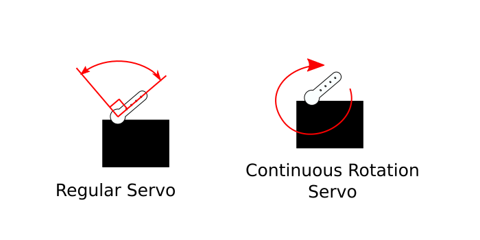

First of all, keep in mind the official Arduino Documentation for a more complete reference:
This will involve using the Servo library. Make sure it is installed. If not, locate it in the library manager. (Don’t know how to install a library?)
Now, let’s locate the built-in example.
Go to:
File > Examples > Servo > Sweep
What is a servo motor?
Earlier we have used a vibration motor which is a simple DC motor with an unbalanced, eccentric weight attached to the shaft. A DC motor shaft will turn if supplied a constant DC voltage (like from a 9V battery).
A servo motor is a specialized motor designed for precise control of rotary motion. There are two type of servo motors that I would like to point out:

Both types look exactly the same, and are both powered using a Pulse Width Modulation (PWM) signal.
Check out the Fade example post for a refresher on PWM.
#include <Servo.h>
Servo myservo; // create servo object to control a servo
void setup() {
myservo.attach(9); // attaches the servo on pin 9 to the servo object
}
void loop() {
myservo.write(180); // tell servo to go to position in variable 'pos'
}#include <Servo.h>To include the library, you have to write this statement.
#include is written followed by the name of the file that
has the code of the library written. This Servo.h file is
the servo library. It is surrounded by these angle brackets.
Abound #include:
From
the Arduino Website
Servo myservo; // create servo object to control a servoFor this library, there is an object called Servo, and it is given
the variable name myservo.
The Arduino language is an Object-Oriented Programming language. An object is similar to a data type, except that it is a data structure. It is more of a defined thing with certain defined attributes. For example, an object called Human might have properties such as age, height, name, etc. and can perform actions like
human.walk(),human.sleep(),human.eat().In this Servo library, there is an object defined called Servo that has the properties of a servo motor, with actions like
attach()andwrite().
myservo.attach(9); // attaches the servo on pin 9 to the servo objectAs said in the comment, this line tells Arduino that this servo is connected to pin 9.
myservo.write(180); // tell servo to go to position in variable 'pos'The write() method changes the position of the servo and
takes an angle between 0 - 180 degrees.
Try changing the number in write() to see where the
servo moves.
#include <Servo.h>
Servo myservo; // create Servo object to control a servo
// twelve Servo objects can be created on most boards
int pos = 0; // variable to store the servo position
void setup() {
myservo.attach(9); // attaches the servo on pin 9 to the Servo object
}
void loop() {
for (pos = 0; pos <= 180; pos += 1) { // goes from 0 degrees to 180 degrees
// in steps of 1 degree
myservo.write(pos); // tell servo to go to position in variable 'pos'
delay(15); // waits 15 ms for the servo to reach the position
}
for (pos = 180; pos >= 0; pos -= 1) { // goes from 180 degrees to 0 degrees
myservo.write(pos); // tell servo to go to position in variable 'pos'
delay(15); // waits 15 ms for the servo to reach the position
}
}A variable is defined to store the angle position.
int pos = 0; // variable to store the servo positionvoid loop() {
for (pos = 0; pos <= 180; pos += 1) { // goes from 0 degrees to 180 degrees
// in steps of 1 degree
myservo.write(pos); // tell servo to go to position in variable 'pos'
delay(15); // waits 15 ms for the servo to reach the position
}
for (pos = 180; pos >= 0; pos -= 1) { // goes from 180 degrees to 0 degrees
myservo.write(pos); // tell servo to go to position in variable 'pos'
delay(15); // waits 15 ms for the servo to reach the position
}
}This sketch is using a for loop.
The structure of a for loop is this:
for (initialization; condition; increment) {
// statement(s);
}There are three things that need to be specified within the
parantheses ().
initialization
You need to initialize a variable with a starting value.
i is used often by convention. This is like a setup
function as it happens first and only happens once.
condition
Each time through the loop, a condition is tested. If it is true, then whatever is within the curly brackets is executed.
increment
After each loop, the variable defined in the initalization section is incremented by a certain amount.
So in our example:
for (pos = 0; pos <= 180; pos += 1) { // goes from 0 degrees to 180 degrees
// the code executed if true
}pos = 0
The pos variable starts with an initial value
of 0.
pos <= 180
The condition: Checks to see if pos is
less than or equal to 180.
pos += 1
If the condition is true: Executes whatever is within the curly
brackets of the loop, and pos is incremented by
1.
(The loop repeats until the condition is false, which is when
pos reaches the value of 181. 181 is no longer less than or
equal to 180)
We then exit the for loop and continue.
The second for loop is the same except pos is given an
initial value of 180, the condition checks to see if pos is
greater than or equal to 0, and then
decrements pos if true (decreases the value by 1).